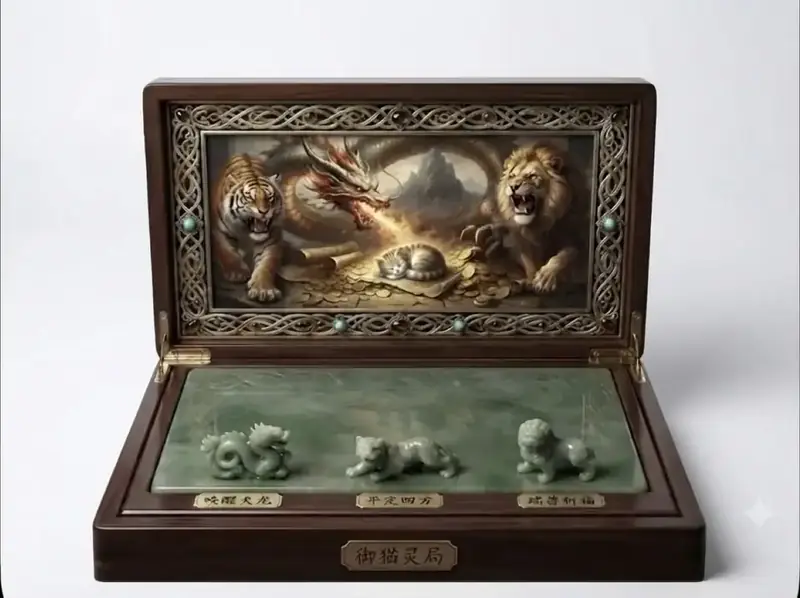
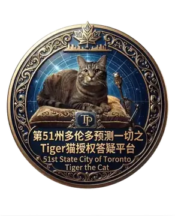
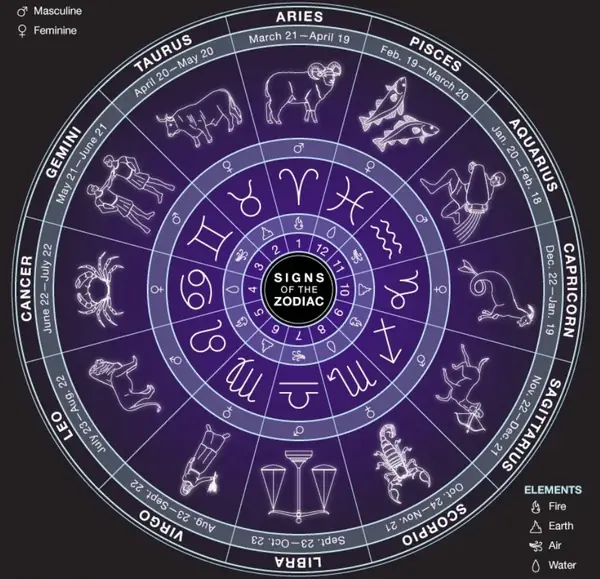

🔔
横屏观看不适合本程序
请旋转至竖屏以获得最佳体验

1️⃣选🐲🐯🦁问卜，不选则随机
🆗请点击 👇掷茭 开始选择
请选择问卜方式
🧭
MBTI 性格测试
🎴
八字运程
✨
星座运势
💬
常见 108 问
✍️
✓
✍️ 请直接输入你的具体问题，然后点掷筊
常见 108 问 · 点击选择（滑到底自动循环）
←
返回上级菜单
↕ 滑动浏览全部问题，到底自动循环
记录
✦ 掷 筊 ✦
重置

🙏 诚心求问 · 掷筊问兆 🪷
命运圆盘
×
🐈
禅猫观盘
心不动，盘自转
禅猫 · 每日运程
长按箱图开启 · 小猫转动圆盘中…
再转一次
仅供一笑 · 与正式问卜无关
近期请示记录
×
48题｜隐藏式 MBTI 人格快测
×
请凭第一反应回答：是 / 否。不要试图猜测题目对应的 MBTI 字母。如果你觉得"两边都可以"，选择更接近你平时自然反应的一边。
已完成 0/48
再次掷筊
返回题目
重新作答
掷筊 · 求详细解读
八字 · 排盘与神煞
×
请填写出生信息，用于排四柱、五行、十神与神煞。排盘算毕将自动掷筊请示——聖筊示完整结果，笑筊示简版，陰筊（怒筊）则暂不显示。
出生日期（滚动选择）
出生时间（24时制 · 滚动）
性别
男
女
快捷地点
沈阳
多伦多
时区
（可手填或勾选上方城市）
使用真太阳时
排 盘 · 掷筊
再次掷筊
重新填写
星座 · 运势与性格
×
滚动选择生日，判定西方星座。确认后自动掷筊——聖筊详版，笑筊简版，陰筊仅示星座。
生日（滚动选择）
快捷地点
（供与八字/星盘共用，星座判定不依赖地点）
沈阳
多伦多
—
确认星座 · 掷筊
再次掷筊
重新选择
星座词典
西方星盘 · Natal Chart
×

请输入星盘所需信息
出生日期（滚动选择）
出生时间（24小时制 · 滚动）
快捷地点
沈阳
多伦多
出生地坐标
（可手填或勾选上方城市）
时区
（可手填或勾选上方城市）
开始分析
重新填写
星盘小词典
知道了
打坐猫 · 每日运程
西方星盘 · 输入